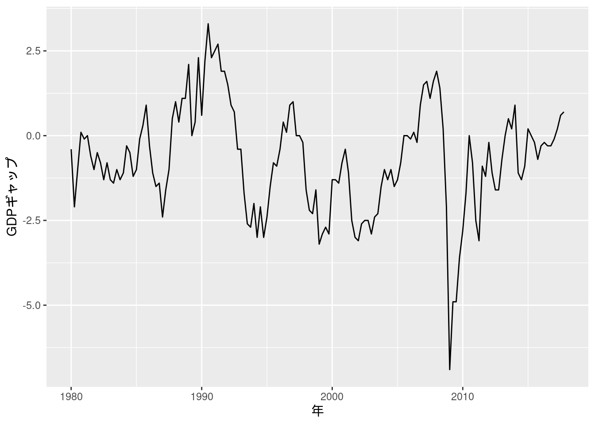

第4章 線形単回帰モデルの推定と検定
先に出版社サイトよりデータをダウンロードする.
# サポートファイルへのリンク
curl <- "https://www.yuhikaku.co.jp/static_files/05385_support04.zip"
# ダウンロード保存用フォルダが存在しない場合, 作成
if(!dir.exists("downloads")){
dir.create("downloads")
}
cdestfile <- "downloads/support04.zip"
download.file(curl, cdestfile)
# データ保存用フォルダが存在しない場合, 作成
if(!dir.exists("data")){
dir.create("data")
}
# WSL上のRで解凍すると文字化けするので、Linuxのコマンドを外部呼び出し
# Windowsの場合は別途コマンドを用いる.
if(.Platform$OS.type == "unix") {
system(sprintf('unzip -n -Ocp932 %s -d %s', "downloads/support04.zip", "./data"))
} else {
print("Windowsで解凍するコマンドを別途追加せよ.")
}必要なライブラリを読み込む.
実証例4.1 労働生産性と実質賃金の関係
p.128の実証例ブロック内の\(N=22\)は\(N=21\)の誤植と思われる.
ch04_wage <- read.csv("data/04_第4章/ch04_wage.csv")
ch04_wage_model <- lm(wage ~ productivity, data = ch04_wage)
summary(ch04_wage_model)
##
## Call:
## lm(formula = wage ~ productivity, data = ch04_wage)
##
## Residuals:
## Min 1Q Median 3Q Max
## -47.618 -17.612 4.186 21.946 37.052
##
## Coefficients:
## Estimate Std. Error t value Pr(>|t|)
## (Intercept) 276.12961 87.61057 3.152 0.00525 **
## productivity 0.54682 0.02442 22.395 4.04e-15 ***
## ---
## Signif. codes: 0 '***' 0.001 '**' 0.01 '*' 0.05 '.' 0.1 ' ' 1
##
## Residual standard error: 25.77 on 19 degrees of freedom
## Multiple R-squared: 0.9635, Adjusted R-squared: 0.9616
## F-statistic: 501.5 on 1 and 19 DF, p-value: 4.037e-15Rのlm()で計算される標準誤差は不均一分散に対して頑健でない.
本文中にある不均一分散に対して頑健な計算結果を求めるには, estimatr::lm_robust()を用い, se_type = "stata"と指定する.
ch04_wage_model_robust <- lm_robust(wage ~ productivity, data = ch04_wage, se_type = "stata")
summary(ch04_wage_model_robust)
##
## Call:
## lm_robust(formula = wage ~ productivity, data = ch04_wage, se_type = "stata")
##
## Standard error type: HC1
##
## Coefficients:
## Estimate Std. Error t value Pr(>|t|) CI Lower CI Upper DF
## (Intercept) 276.1296 71.25559 3.875 1.019e-03 126.990 425.2693 19
## productivity 0.5468 0.02046 26.722 1.553e-16 0.504 0.5896 19
##
## Multiple R-squared: 0.9635 , Adjusted R-squared: 0.9616
## F-statistic: 714.1 on 1 and 19 DF, p-value: < 2.2e-16練習問題 4-2 [実証]
- データを読み込み, 回帰分析を実行する.
Excelファイルの読み込みには
readxl::read_excel()を用いる. このパッケージはtidyverseに付帯しているが, 別途読み込む必要がある. 列名が日本語だと扱いづらいため, これを変更しておく. \(gdp2013\_ln = \beta_0 + \beta_1 pop2013\_ln\)というモデルを立てると, \(\hat{\beta_0} = 7.623, \hat{\beta_1} = 1.075\)と求められる.
data42 <- read_excel("data/04_第4章/data for chap 4 exercise 2.xlsx")
colnames(data42) <- c("pref", "pop2013", "gdp2013", "pop2013_ln", "gdp2013_ln")
model42 <- lm(gdp2013_ln ~ pop2013_ln, data = data42)
model42
##
## Call:
## lm(formula = gdp2013_ln ~ pop2013_ln, data = data42)
##
## Coefficients:
## (Intercept) pop2013_ln
## 7.623 1.075- 帰無仮説\(H_0\): \(\beta_1 = 1\)に関して, 統計量\(t = \frac{\hat{\beta_1} - \beta_1}{\text{SE}(\hat{\beta_1})} = 2.62773\)が求められる. これは自由度\(n-2 = 45\)で, 有意水準5%のt検定の棄却域\((\infty, -2.014103]\), \([2.014103, \infty)\)に入っていることから帰無仮説は棄却される.
beta1 <- model42$coefficients[2]
sebeta1 <- summary(model42)$coefficients[2, 2]
n <- dim(data42)[1]
t <- (beta1 - 1)/sebeta1
t
## pop2013_ln
## 2.62773
qt(0.975, n-2) # 2.014103
## [1] 2.014103confint()関数を用いると直接求められる.
人口が1%変化すると, GDPは\(\beta_1 = 1.075\)%変化する.
\(\text{Var}(u) = \frac{\sum_{i=1}^n \hat{u}_i^2}{n-2} = 0.02245859\)と求められる. ln(人口)の分散は
var()関数を用いると, 0.5964525と求められる.
練習問題 4-10 [実証]
- データを読み込み, 回帰分析を実行することで\(\beta_1\)を一致推定できるか調べる. 実際に計算すると, Cov\((u_i, X_i) = 0\)が成り立っていることが確認できる.
data410 <- read_excel("data/04_第4章/data for chap 4 exercise 10.xlsx") %>% data.frame()
model410 <- lm(Y ~ X, data = data410)
cov(model410$residuals, data410$X)
## [1] 3.643979e-17- E\((u_i^2|X_i) = 0.690318 \neq 0\). 散布図を描くと, \(\hat{Y}_i\)が大きくなるに従って残差の分散が大きくなっていることが確認できる.
mean(model410$residuals^2)
## [1] 0.690318
model410 %>%
ggplot(aes(x = .fitted, y = .resid)) +
geom_point() +
geom_hline(yintercept = 0)
- 不均一分散に頑健な標準誤差は
estimatr::lm_robust()を用いて求める.
model410_robust <- lm_robust(Y ~ X, data = data410)
summary(model410_robust)
##
## Call:
## lm_robust(formula = Y ~ X, data = data410)
##
## Standard error type: HC2
##
## Coefficients:
## Estimate Std. Error t value Pr(>|t|) CI Lower CI Upper DF
## (Intercept) 0.8103 0.1583 5.119 4.803e-07 0.4991 1.122 398
## X 1.2773 0.2158 5.918 7.035e-09 0.8530 1.702 398
##
## Multiple R-squared: 0.05683 , Adjusted R-squared: 0.05446
## F-statistic: 35.02 on 1 and 398 DF, p-value: 7.035e-09summary()によると, \(\beta_1\)の95%信頼区間に0.8は入っていないため, 帰無仮説は棄却されない.
- 不均一分散に頑健な標準誤差は
estimatr::lm_robust()を用いて求める.
summary()によると, \(\beta_1\)の95%信頼区間に0.8は入っており, 帰無仮説は棄却される.
- 分散が均一でないデータに均一分散を仮定した標準誤差を用いると, 上のように異なる結果が導かれることがある.